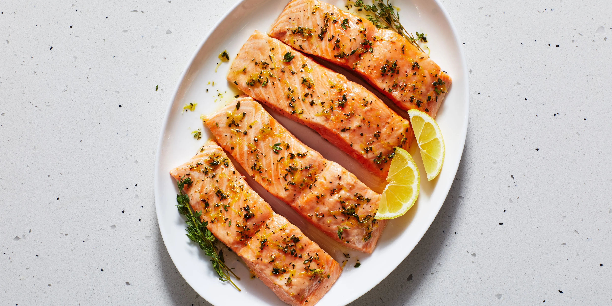

Best Baked Salmon

Protien. Omega 3. Crispy outside. Lemony touch.
Drop the mike.
Salmon is a main that's only gaining more and more leverage as time goes on. Now is the perfect time to master it. A few easy ingrediants and precise cook-time is all you need to be on your way.
If you've got kids at home, don't be shy to introduce this option to them. Their pallets are ready for it! Never let the concern of "over-sophistication" deter you. Try it.
Ingrediants
- 6 Salmon Fillets
- 3 Tbsp Olive Oil
- 1 Tbsp Italian Herb Seasoning Blend
- 1/2 Tbsp Kosher Salt
- 1/2 Tbsp Crushed Black Pepper
- 1 Tbsp Minced Garlic
- 1 Lemon
Steps
- Preheat the oven to 400F.
- Arrange the salmon on a baking sheet.
- Mix your spices, olive oil and lemon in a bowl.
- Spoon the mixture onto the fillets. Try not to leave huge dry spots.
- Bake the salmon for 15-18 minutes until you see that flacky awesomeness.